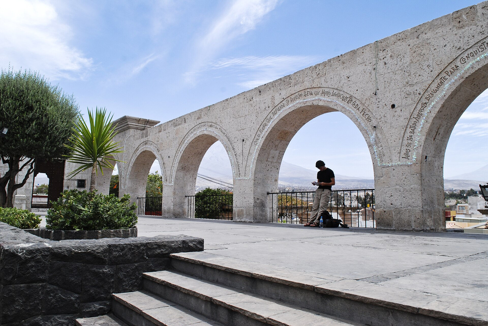
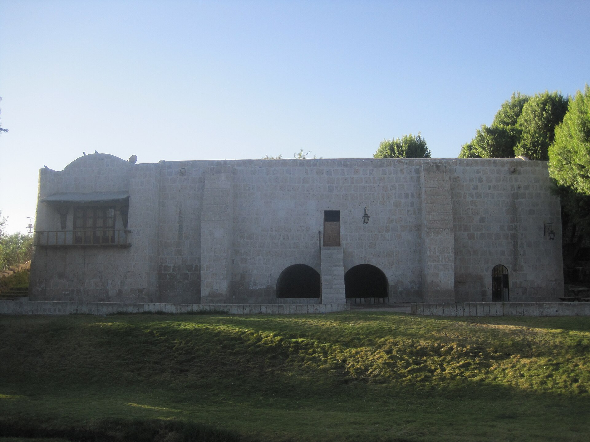
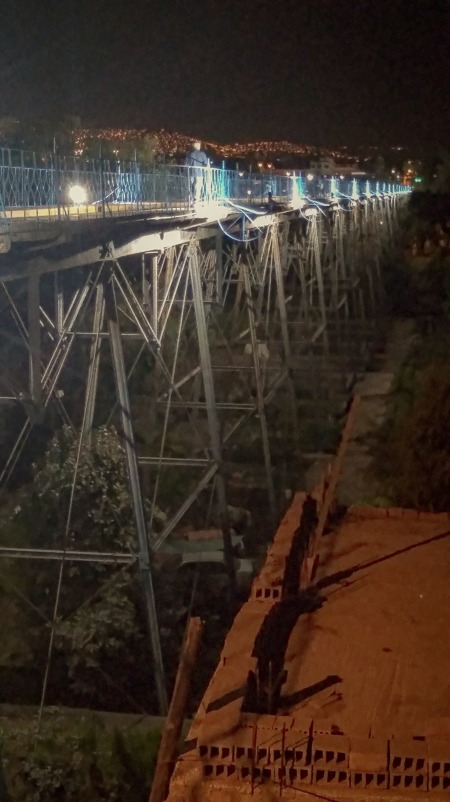

Profesional con sólida experiencia en el desarrollo de aplicaciones y sistemas de información. Especialista en informática, con maestría y formación en Tecnología Educativa e Investigación en el CREA-ISPAJAE, Cuba. Investigador en proyectos financiados por PROCIENCIA.
Actualmente se desempeña como especialista y consultor en proyectos de I+D+i, con enfoque en Interacción Humano-Computador, Informática Educativa e Inteligencia Artificial. Arequipeño, docente universitario con más de 15 años de trayectoria en instituciones de prestigio.

Mirador de Yanahuara · Arequipa, Perú
Desarrollo de aplicaciones y sistemas de información con Python, Java, PHP, C++ y frameworks modernos como Spring MVC, Hibernate y Angular.
Investigación aplicada en inteligencia artificial y visión por computador, incluyendo sistemas de videovigilancia inteligente con técnicas de Deep Learning.
Capacitación en tecnologías de la información y comunicación, plataformas educativas y formación de habilidades en recursos educativos.
Reunión inicial para comprender las necesidades, objetivos y alcance del proyecto. Definición de entregables y cronograma.
Desarrollo iterativo del proyecto con revisiones periódicas. Uso de metodologías ágiles para garantizar calidad y flexibilidad.
Presentación del proyecto completo, pruebas finales y ajustes. Capacitación y documentación para el uso del sistema.
Sololearn
2021Fundación Telefónica
2020Fundación Telefónica
2020Enago Learn
2020Coursera - Programa especializado
2019Cisco Networking Academy
2019Cisco Networking Academy
2019Universidad Peruana Cayetano Heredia
2015Realiza actividades académicas relacionadas con programación, negocios digitales e investigación en la carrera profesional de Ingeniería de Computación y Sistemas.
Investigación en Computer Vision y Deep Learning, y su aplicación en el proyecto: "Prototipo de sistema de videovigilancia inteligente de distanciamiento social y uso de mascarillas utilizando técnicas de Deep Learning y Computer Vision".
Dictado del curso de "Seminario de Investigación" en la Maestría en Ciencias: Administración (MBA).
Realizó actividades académicas relacionadas con programación, negocios digitales y cloud computing en la carrera profesional de Ingeniería de Sistemas e Informática.
Realizó actividades de capacitación en tecnologías de la información y comunicación para el personal de establecimientos de salud.
Investigación en tecnologías educativas, aplicadas al proyecto: "Plataforma interactiva de programación visual con interfaces tangibles, con aplicación en la enseñanza de matemática en Educación Básica Regular".
Servicios de vigilancia tecnológica para centros de investigación y aulas de innovación tecnológica, orientadas al desarrollo de proyectos I+D+i en TIC y educación.
Realizó actividades de capacitación en plataformas educativas y formación de habilidades en recursos educativos.
Docencia en animación de gráficos, herramientas multimedia, seguridad informática, desarrollo y mantenimiento de software.
Docencia en animación de gráficos, herramientas multimedia, seguridad informática, instalación de redes, actualización y mantenimiento de equipos de computación y ofimática.
Realiza actividades de prevención y combate de incendios, emergencias médicas y rescate desde 2007.
JINIS 2023: XXX International Conference on Systems Engineering.
RISTI - Revista Ibérica de Sistemas y Tecnologías de Información.
International Conference on Software and Services Engineering, República Checa.
International Conference on Information and Education Technology (ICIET), Japón.
International Journal of Computer Theory and Engineering, Japón.

International Journal of Knowledge Engineering, Inglaterra.
Nuevas Ideas en Informática Educativa TISE, Chile.

Nuevas Ideas en Informática Educativa TISE, Chile.
Universidad Tecnológica del Perú, Arequipa.
Universidad Tecnológica del Perú, Arequipa.
Universidad Nacional de San Agustín de Arequipa.
Universidad Andina Néstor Cáceres Velásquez, Juliaca.
CONCYTEC, Arequipa.
Por mejor exposición. Universidad Nacional de San Agustín, Arequipa.
¿Quieres ser notificado sobre nuevas publicaciones o proyectos? Suscríbete y te enviaré una notificación por correo.
Urb. San Agustín D-19
Yanahuara, Arequipa, Perú